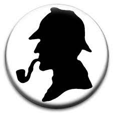
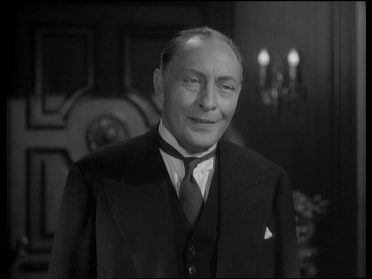
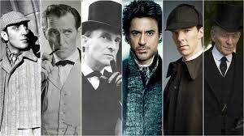

Sherlock Holmes

"Elementary, my dear Watson!"
221B Baker Street
Born: 1854, British
Professor James Moriarty


Different Actors to Play Holmes
Holmes has been played by more than 75 actors in over 250 productions!
Ronald Howard
Basil Rathbone - Sherlock Holmes
Nigel Bruce - Watson
Radio Show
Years 1880 - 1914
1887 - A Study In Scarlett
The Hound of the Baskervilles
1891 -A Scandal In Bohemia
The Greek Interpreter
The Adventure of the Empty House
The Adventure of the Second Stain
The Adventure of the Crooked Man
4 novels
56 short stories
Drug Use
Cocaine
Needle
Tobacco
Arthur Conan Doyle
Used Edgar Alle Poe's C. Auguste Dupin as a reference
Doyle says hes based off a man named Joseph Bell, a surgeon.